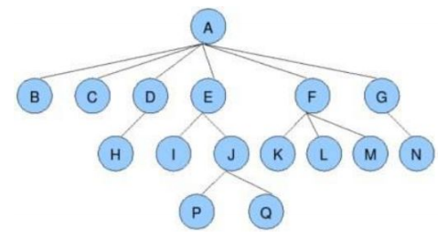
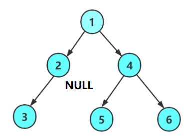
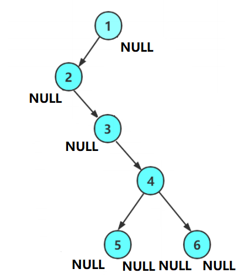
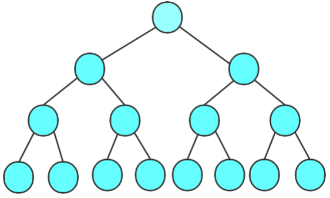
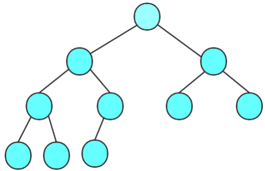
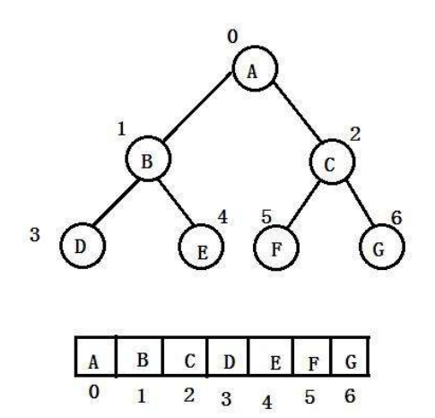

该系列为本人的学习笔记，主要由本人整理书写而成。部分内容来自教材、视频课程等，不能保证完全原创性。
萌新的学习笔记，写错了恳请斧正。
# 树
树是一种非线性的数据结构，它是由 n 个节点组成的一个具有层次关系的数据集合。其大概结构如下图：

其形状类似于一棵倒挂的树，由此得名。
# 树的相关概念
- 节点：树中每一个存储数据的元被称为节点。上方示意图中 A~Q 都是这棵树的节点。
- 根节点：根节点没有父节点，是整棵树的最上面的节点，是该树其他所有节点的发源。也就是上面示意图中的 A 节点。
- 父节点（双亲节点）：就是树中与某节点相连但在其 “上方” 的节点。比方说，上方示意图中 A 是 BCDEFG 的父节点、E 是 IJ 的父节点。
- 子节点（孩子节点）：与父节点相对，就是树中与某节点相连但在其 “下方” 的节点。比方说，上方示意图中 BCDEFG 都是 A 的子节点。
- 兄弟节点：有相同父节点的节点互为兄弟节点。比方说，上方示意图中 B 与 C 互为兄弟节点、P 与 Q 互为兄弟节点。
- 堂兄弟节点：只要两个节点互不为兄弟节点但处于树的同一层（与根节点的距离相同，则称其为堂兄弟节点。比方说，上方示意图中 H 与 J 互为堂兄弟节点。
- 节点的祖先：一个节点到根节点的唯一路径上所有的节点都是该节点的祖先。比方说，上方示意图中 A 节点为所有节点的祖先。
- 节点的子孙：又某一个节点 “向下” 延伸出来的所有节点都是该节点的子孙。比方说，上方示意图中其他所有节点都是 A 节点的子孙。
- 子树：把根节点的一个子节点拿出来，这个节点与其所有子孙再次组成一棵树，这棵树就称为母树（原本的树）的一棵子树。比方说上方示意图中 E、I、J、P、Q 就构成了母树的一棵子树。注意子树可以只有一个根节点
- 节点的度：一个节点的子树的个数称为节点的度。比方说，上方示意图中 A 节点的度为 6
- 树的度：一棵树最大的节点的度就是这棵树的度。比方说，上方示意图中树的度就是 A 节点的度，为 6.
- 叶节点（终端节点）：度为 0 的节点（没有子节点）就是叶节点。比方说，上方示意图中 BCHIKLMNPQ 都是叶节点。
- 分支节点（非终端节点）：度不为 0 的节点（有子节点）就是分支节点。比方说，上方示意图中 ADEFGJ 都是分支节点。
- 森林：多颗不相连的树组成森林。
# 树的表示
树的表示方法有多种，这里介绍较为常用的左孩子右兄弟表示法。这个方法能够让我们方便的向下查找。
我们定义一个结构体作为树的节点：
typedef int TDataType // 树存储的数据类型 | |
typedef struct Tree | |
{ | |
TDataType data; | |
struct Tree* lChild; | |
struct Tree* rSibling; | |
} Tree; |
这个结构体中，lChild 存储该节点最左边的子节点，rSibling 存储与其紧邻的右侧兄弟节点。
这样，我们还是以上方示意图为例，为了方便我再次把图片贴出：
如果我们想通过 A 节点找到 P 节点，这时问题就会变的非常简单了，只需要按照如下路线图寻找即可：
flowchart LR | |
id1(A)--lChlid-->id2(B) | |
id2--rSibling*3-->id3(E) | |
id3--lChlid-->id4(I) | |
id4--rSibling-->id5(J) | |
id5--lChild-->id6(P) |
如果想要子节点也能向上寻找，那还可以再结构体中添加一个成员用于储存父节点。
# 二叉树基础
二叉树是一种特殊的树结构，其特征为每一个节点都有且只有两个子树或空子树。
下方是一个二叉树的示意图（其中 2 节点的右子树就是空）：

我们还可以更加抽象一点，下图同样也是一个二叉树：

# 二叉树分类
有两种特殊的二叉树类型需要我们单独的来看一看，它们是满二叉树和完全二叉树。
# 满二叉树
一个二叉树如果每一层的节点数都达到最大，那这就是一个满二叉树，一个 k 层的满二叉树的节点总数是 2k - 1 。

# 完全二叉树
完全二叉树的概念看图很好理解，但是用文字描述就比较复杂了。对于深度为 K 的有 n 个节点的二叉树，当且仅当其每一个节点都与深度为 K 的满二叉树中编号从 1 至 n 的节点一一对应时称之为完全二叉树。

# 二叉树的性质
- 一棵非空二叉树的第 i 层上最多有 2i-1 个节点。
- 深度为 h 的二叉树的最大节点数是 2h - 1 。
- 对任何一棵二叉树，若度为 0 的节点个数为 n0 ，度为 2 的节点个数为 n2 ，那么 n0 = n2 + 1 。
- 具有 n 个节点的满二叉树深度为 log2(n + 1) 。
- 若逐层从左至右给每一个节点编号（根节点编号 0），那么对应序号为 i 的节点：
- i 的父节点的编号为 （当 时）
- i 的左孩子节点编号为 （当 时）
- i 的右孩子节点编号为 （当 时）
# 二叉树的存储结构
实现二叉树我们一般有两种存储结构，一种是顺序存储，一种是链式存储。
# 顺序存储
顺序存储就是用顺序表（数组）来存储节点，一般来说只适用于完全二叉树。
因为对于完全二叉树，我们可以逐层从左至右给节点编号，存储在数组对应位置，再通过二叉树的性质轻易找到其父节点或左右孩子节点。

如果不是完全二叉树，这样中间就会有大量的空节点，造成空间浪费。
对于这种存储方式，将在下一篇笔记通过堆（一种基于二叉树的数据结构）来实现与细致的讲解。
# 链式存储
链式存储就是用链表来存储二叉树的节点。一般来说有两种实现，分别是二叉链和三叉链。
二叉链就是链表的每个节点由数据域和左右指针域组成，左右指针分别指向左孩子与右孩子节点。对于一些更复杂的数据结构，我们可能会使用到基于三叉链的二叉树，也就是再增加一个指针指向其父节点。
//Binary Tree 二叉树 | |
typedef int BTDataType; | |
// 二叉链 | |
typedef struct BTNode | |
{ | |
struct BTNode* lChild; | |
struct BTNode* rChild; | |
BTDataType data; | |
} BTNode; | |
// 三叉链 | |
typedef struct BTNode | |
{ | |
struct BTNode* lChild; | |
struct BTNode* rChild; | |
struct BTNode* parent; | |
BTDataType data; | |
} BTNode; |